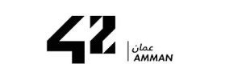

42 Amman is a unique, future-proof computer programming school that aims to train Jordan’s next generation of coders and problem solvers.
Inclusivity and accessibility are at the core of 42 Amman. The campus is fully equipped with state-of-the-art computers and high-speed internet and is open 24 hours a day, seven days a week. Tuition is entirely free, and 42 Amman accepts all talents over the age of 18, regardless of gender, background, education or origin. Centered around a gamified coding approach, 42 Amman, which began operating in 2023, has no teachers, no classrooms and no lectures. Instead, it uses a hands-on method of learning which consists of practical experience and peer collaboration. This peer-to-peer, project-based, methodology creates a supportive community of creative problem solvers with a spirit of collaboration and generates the finest digital developers.
As part of the global network of 42, 42 Amman is connected to international curricula with lifetime, worldwide updates, thereby bridging the gap between technological advancements and the global job market. This ensures that 42 Amman graduates are fully equipped with the latest skills in a continuously evolving digital world.
